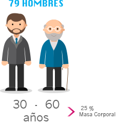

Evidencias científicas de la ingestión de las Proteínas Bioactivas
La Figura 47 a continuación se refieren a un estudio de la Universidad de Freiburg que permite ver el índice de masa magra sustancialmente superior con Gelicart® Action en comparación con placebo: “Impacto de los Péptidos de Colágeno Bioactivos específicos en combinación con ejercicios de resistencia sobre la composición corporal.”

Diseño del estudio de la Universidad de Freiburg
- Doble ciego, aleatorizado y placebo controlado.
- Participantes: n = 79 hombres, con edad entre 30 y 60 años, com la grasa corporal >25%, fisicamente inactivos.
- 15 g Proteínas Bioactivas o placebo – ingestión diaria.
- Duración: 3 meses.
- Incluyendo 3 x 60 min ejercicio de resitencia por semana.
- Resultado primario: comparación de las diferencias en Masa Libre de Grasa (FFM) entre los dos grupos de estúdio (DXA).
- Las respectivas diferencias em Masa Libre de Grasa fueron calculadas por la sustracción de la Masa Libre de Grasa (medida en kg) al final del estúdio del valor registrado al inicio del estudio.